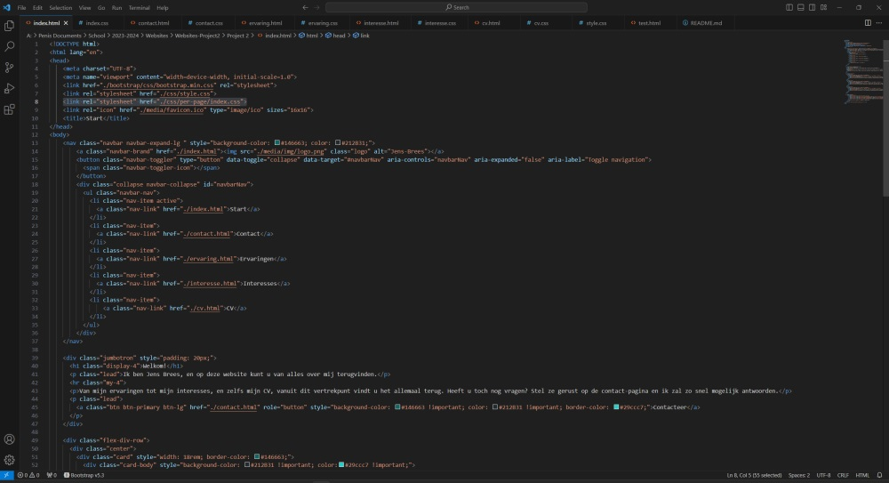
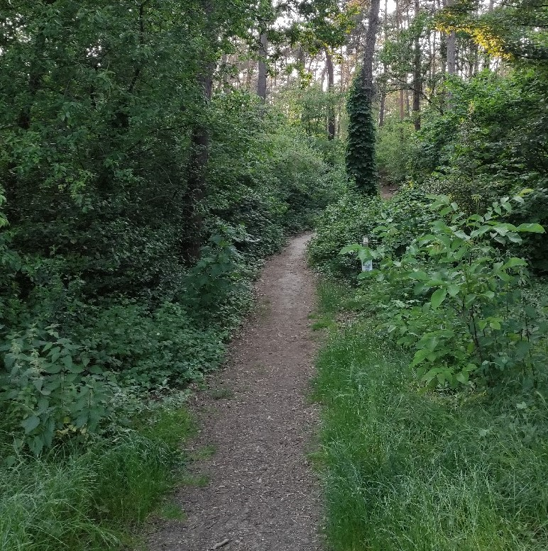
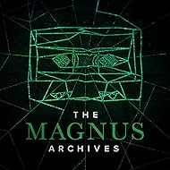
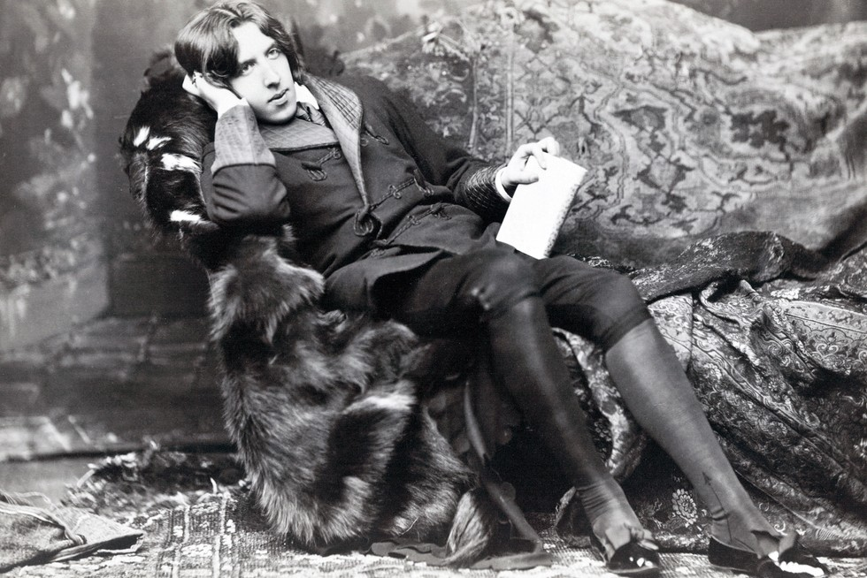

Interesses
Programmeren
In het secundair onderwijs besloot ik mezelf python te leren, dus heb ik een tutorial opgezet en probeerde ik wat dingen uit. In het komende jaar daarna bleef ik nog wat uitproberen en bijleren tot ik de mogelijkheid had om kleine programma’s te maken op mezelf. Ook het vak beginselen van programmeren, dat ik kreeg in mijn onderbroken traject in Leuven, heb ik heel wat bijgeleerd. Met mijn studies op Thomas More voor een graduaat programmeren weet ik zeker dat ik nog een heel stuk beter ga worden.
Wetenschappen

Al sinds ik me kan herinneren heb ik opgekeken naar mensen die de aard van onze wereld kunnen begrijpen en dat begrip kunnen gebruiken om er iets nieuws van te maken. Dankzij mijn jaren in wetenschappen wiskunde heb ik een basisbegrip van deze disciplines geleerd en daar ben ik ook trots op. Ik hoop in de toekomst nog meer bij te leren over hoe onze wereld werkt.
Gamen

Zoals velen van mijn generatie werd ik aangetrokken naar games. Het strategisch nadenken, oplossen van puzzels en creatief opbouwen van werelden met behulp van de mechanismes dat de developers in plaats hebben gezet voor ons om te gebruiken is werkelijk een verrijkende ervaring, en het zien van hoe creatief ze kunnen zijn met deze mechanismes is een geschenk op zichzelf.
Wandelen
De rust dat je kunt vinden van een uurtje of twee in een bos rond te wandelen is in mijn mening ongeëvenaard. Het inademen van de verse lucht en het zien van de natuur in werking, met of zonder muziek, is wat mij na een stressvolle dag weer volledig in orde brengt.
Horror
Ik hou van alles dat temaken heeft met horror. Van de verhalen die in dit genre geschreven zijn tot de concepten die hierin verwerkt zijn en de methodes die gebruikt worden om een goede emotionele impact te hebben op de lezer/kijker/luisteraar.
19de eeuw
De 19de eeuw, en specifiek de late 19de eeuw, was een zeer interressante periode in onze geschiedenis. Van Jack The Ripper tot de eiffeltoren en klassiekers zoals frankenstein, Sherlock Homes en The Picture Of Dorian Gray. Daarnaast was deze periode ook zeer rijk aan wetenschappelijke ontwikkelinge en culturele rijkdom.